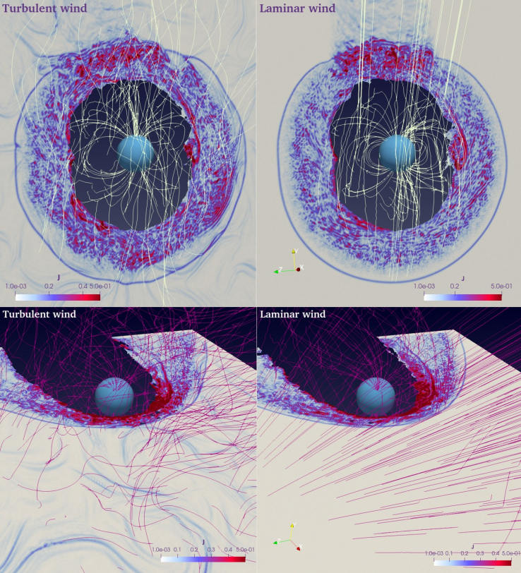

Menura#
Menura is an hybrid-kinetic PIC code in which ions are represented as (macro-)particles and electrons as a neutralizing massless fluid [1]. The PIC main cycle is solved my means of the Current Advance Method (CAM). Menura has been built to study the interaction of the solar wind with solid bodies like comets and planets. Different from other global models, the code solves the plasma dynamics equations in the solar wind reference frame. In order to keep the planet inside the computational domain, a box shifting algorithm is implemented that makes the numerical box comoving with the planet itself. This reference frame choice allows to make the object propagate in a structured, namely not laminar, solar wind. The latter can be prescribed analytically or self-consistenly generated by means of a dedicated simulation.
WG Points of Contact |
Francesco Pucci, Pierre Henri |
Current code version |
|
code/repository |
|
Software code languages and tools |
Menura is written in Cuda and C++ The repository contains Python scripts for output analysis |
Use cases#
Menura is meant to study the interaction of a turbulent solar wind with induced and intrinsic magnetospheres. The code has been already used to model a cometary plasma enviroment [2] and a magnetosphere [3].
{kind=link}
Data availability#
Data sets from the simulations in [2] and [3] are available upon request. These include magnetic and electric field, particle moments (density, current, and pressure) and the ion distribution function.
Simulations-on-demand#
Simulations can be performed on-demand. Please get in touch with the WG Points of Contact (francesco.pucci@istp.cnr.it, pierre.henri@oca.eu).
Numerical Methods#
More details on the algorithm implementation can be found in [1] and at https://menura.readthedocs.io/en/latest/.